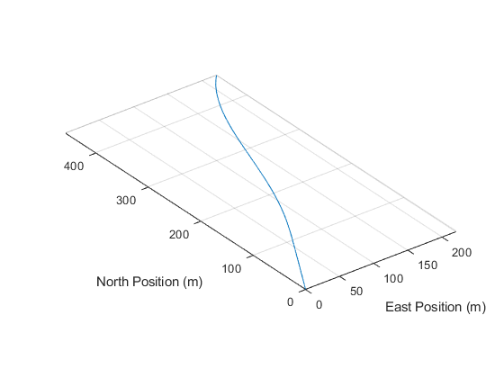
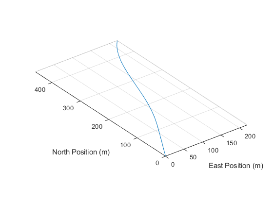
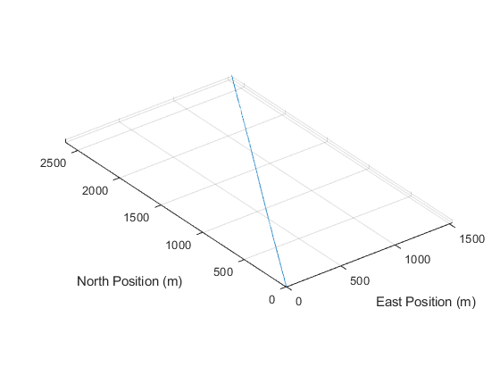
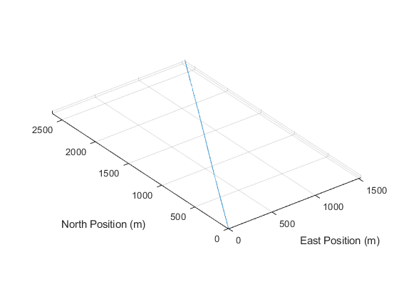

Contents
clear close all clc format long format compact
Prelims
model = 'mavsim_chap4'; dt_interval = 30; tsim = dt_interval*5; P.Ts = 0.01; % autopilot sample rate P.gravity = 9.81; timevals = 0:P.Ts:tsim; nsamp = length(timevals);
Problem 0
Implement the gravitational and aerodynamic forces and torques (i.e. moments) in forces_moments.m according to the equations in chapter 4 of the text. Also assign values to each parameter in aerosonde.m from Table E.2 of the text.
aerosonde
You'll learn about trim later, but the following elevator and throttle values will maintain the initial conditions specified in intial_conditions.m, which is straight and level flight at 30 deg NE.
delta_e_trim = -0.249783066499116; delta_t_trim = 0.234441632274487; initial_conditions
Set both steady-state wind and gusts to zero inside wind_parameters.m
wind_parameters
Problem 1: Effect of the elevator control surface
This section of code varies the elevator value during flight of the aircraft. Given the definitions of positive control surface deflection from chapter 4, what behavior do you expect for the altitude, Y-axis angular velocity, Z-axis translational velocity, and pitch angle?
Insert answer here When the elevator angle goes up the angle of attack will go down, this will result in a small decrease in altitude, but the forces should equal out. The Y-axis angular velocty shouldn't be affected. The Z-axis translational velocity will fall below zero as the plane goes down slightly, but then it will even out quickly. The pitch angle is similar to the angle of attack in that it will drop when whith a positive elevator deflection. With a negative elevator deflection you will have the opposite effects.
% Run the simulation and verify the expected behavior. close all dt_interval = 30; tsim = dt_interval*5; delta_e = ones(1,nsamp) * delta_e_trim; delta_a = zeros(1,nsamp); delta_r = zeros(1,nsamp); delta_t = ones(1,nsamp) * delta_t_trim; delta_e(timevals>dt_interval*1 & timevals<=dt_interval*2) = ... delta_e_trim + 2*pi/180; delta_e(timevals>dt_interval*2 & timevals<=dt_interval*3) = delta_e_trim; delta_e(timevals>dt_interval*3 & timevals<=dt_interval*4) = ... delta_e_trim - 2*pi/180; delta_e(timevals>dt_interval*4 & timevals<=dt_interval*5) = delta_e_trim; datavals = [delta_e; delta_a; delta_r; delta_t]; delta = timeseries(datavals,timevals); %#ok<*NASGU> sim(model, tsim); generatePlots;

Problem 2: Effect of the aileron control surface
This section of code varies the aileron value during flight of the aircraft. Given the definitions of positive control surface deflection from chapter 4, what behavior do you expect for X-axis angular velocity, roll angle, and heading?
Insert answer here When the aileron is changed it causes the plane to roll. The roll angle will go up and down during this test. The X-axis angular velocity will also vary with the roll angle. When the plane rolls it causes the lift force on the main wing to also cause a lateral force which will adjust the heading to move in the direction of negative roll
% Run the simulation and verify the expected behavior. close all dt_interval = 5; tsim = dt_interval*6; delta_e = ones(1,nsamp) * delta_e_trim; delta_a = zeros(1,nsamp); delta_r = zeros(1,nsamp); delta_t = ones(1,nsamp) * delta_t_trim; delta_a(timevals>dt_interval*1 & timevals<=dt_interval*2) = -0.1*pi/180; delta_a(timevals>dt_interval*2 & timevals<=dt_interval*6) = .1*pi/180; datavals = [delta_e; delta_a; delta_r; delta_t]; delta = timeseries(datavals,timevals); sim(model, tsim); generatePlots;
 
 Problem 3: Effect of the rudder control surface
This section of code varies the rudder value during flight of the aircraft. Given the definitions of positive control surface deflection from chapter 4, what behavior do you expect for Z-axis angular velocity, heading angle, and roll angle?
Insert answer here Changing the rudder will cause a yaw moment and change the heading. When the rudder angle is negative it will cause the plane to move towards the left wing or have a necative yaw. The z axis angular velocity will be negative at this point. The heading will be increasing at this point. The roll angle should not be affected. The opposite will happen with a positive rudder angle.
% Run the simulation and verify the expected behavior. close all dt_interval = 5; tsim = dt_interval*6; delta_e = ones(1,nsamp) * delta_e_trim; delta_a = zeros(1,nsamp); delta_r = zeros(1,nsamp); delta_t = ones(1,nsamp) * delta_t_trim; delta_r(timevals>dt_interval*1 & timevals<=dt_interval*2) = -0.1*pi/180; delta_r(timevals>dt_interval*2 & timevals<=dt_interval*6) = 0.1*pi/180; datavals = [delta_e; delta_a; delta_r; delta_t]; delta = timeseries(datavals,timevals); sim(model, tsim); generatePlots;

Problem 4: Effect of the thrust control input
This section of code varies the thrust value during flight of the aircraft. Given the definitions of positive thrust from chapter 4, what behavior do you expect for the airspeed, X-axis translational velocity, and altitude?
Insert answer here With an increase in thrust the plane should speed up a little. This will cause the x-axis translational velocity to increase which will cause a slight increase on the angle of attack which will cause the planes altitude to rise. The plane should reach a point where the new thrust vale stops increasing the angle of attack though and the plane's altitude and speed will stop increasing because it will create more drag.
% Run the simulation and verify the expected behavior. close all dt_interval = 60; tsim = dt_interval*3; delta_e = ones(1,nsamp) * delta_e_trim; delta_a = zeros(1,nsamp); delta_r = zeros(1,nsamp); delta_t = ones(1,nsamp) * delta_t_trim; delta_t(timevals>dt_interval*1 & timevals<=dt_interval*2) = .... delta_t_trim + .01; delta_t(timevals>dt_interval*2 & timevals<=dt_interval*3) = delta_t_trim; datavals = [delta_e; delta_a; delta_r; delta_t]; delta = timeseries(datavals,timevals); sim(model, tsim); generatePlots;
 
